数电复习资料
by: 人工智能学组 石皓文
0x00 二进制
关于二进制的内容，简单回顾如下：
单位：
- 最高有效位，最低有效位
- 一字节（byte）是八比特（bits）
- 半字节（nibble）
- \(1\mathrm K = 2^{10}, 1\mathrm M = 2^{20}, 1\mathrm G = 2^{30}\)
符号：
有符号数的原码是符号位+无符号绝对值；反码是原码基础上负数的绝对值部分取反；补码是反码加一，或绝对值的按位取反加一。
原码的问题包括：正负数无法直接相加减；有 +0 和 -0 两个 0。反码解决了第一个问题。补码则解决了第二个问题。对于 \(b\) 位补码，能表示的数的范围是 \([-2^{b-1}, 2^{b-1} - 1]\)。
例：将 \(-21\) 转为 8 位原码/补码。
首先，写出 \(21\) 的二进制表示：\((00010101)_2\)。则原码是 \((10010101)_2\)，补码是 \((11101010)_2 + 1 = (11101011)_2\)。
实数：
实数有两种存储方式，分别是定点数和浮点数。
所谓定点数，就是整数部分和小数部分长度确定的数，例如约定前 \(b_1\) 位整数，后 \(b_2\) 位小数。聪明的读者不难发现，这就是以 \(2^{-b_2}\) 为单位的整数，加减法的规则和整数完全相同，只有乘法最终截断的位置不同。所以，负定点数的表示，可以自然的使用整数的补码表示法：先取反，再在最低位加一（即加 \(2^{-b_2}\)）。
所谓浮点数，其实是科学计数法。下面以单精度浮点数为例，讲解浮点数的表示方法：
float 共 32bits，包括 1bit 符号位（S），8bits 指数位（E）和 23bits 尾数位（M）。
指数位表示科学计数法中 2 的幂次。由于幂次有正有负，因此 E 自带一个偏移量，为最高位位值减一。对于 8 位的 E，偏移量是 127。
尾数位从高到低表示了有效数字；并且，由于在二进制下，首个有效数字必然是 1，所以 M 实际上是从第二个有效数字开始表示的。
当E不全为 0 或不全为 1 时，表示的结果为：
当E全为0时，表示的结果为：
当E全为1时，若M全为0，表示的结果为 ±inf（取决于符号位）；若M不全为0，表示的结果为 nan。
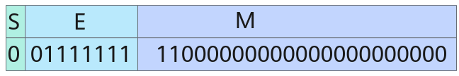
上图中 \(S=0, E = 127, M = 2^{-1} + 2^{-2}\)，最终表示的结果为 1.75。
其它常见浮点数的 S，E，M 分配如下：
| 格式 | 总位数 | 符号位 S | 指数位 E | 尾数位 M |
|---|---|---|---|---|
float |
32 | 1 | 8 | 23 |
double |
64 | 1 | 11 | 52 |
half |
16 | 1 | 5 | 10 |
bfloat16 |
16 | 1 | 8 | 7 |
0x04 逻辑门
逻辑门是最简单的数字电路，是组合电路的基本单元。逻辑门对二进制变量进行布尔运算，可以联系离散数学内容学习。
常用的逻辑门如下：
| 缩写 | 含义 | 符号 | 离散数学表达式 |
|---|---|---|---|
| AND | 与门 | 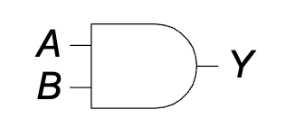 |
\(p\land q\) |
| OR | 或门 | 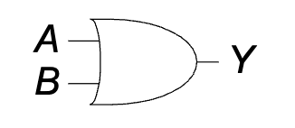 |
\(p\lor q\) |
| XOR | 异或门 | 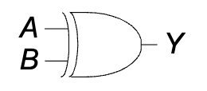 |
\((\lnot p\land q)\lor(p\land \lnot q)\) |
| NOT | 非门 | 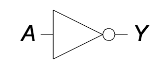 |
\(\lnot p\) |
特别的，在很多情况下，单个气泡就可以代表取反，在其它逻辑门的输入或输出端加上气泡，就可以产生更多逻辑门。比如与非门：
| 缩写 | 含义 | 符号 | 离散数学表达式 |
|---|---|---|---|
| NAND | 与非门 | 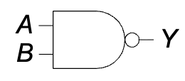 |
\(\lnot (p\land q)\) |
读者可以自己尝试构造 XNOR 门。
对于与门和或门，可以自然的扩展到多输入，只要多划一些线即可。自然地，基于与门和或门拓展的门也可以。可以证明，异或操作也具有结合律，因此多输入异或门也是有意义的，但是 PPT 上没有出现。
0x08 噪声容限
在系统中，常用低电压 GND 表示 0，高电压 VDD 表示 1。电压传输过程中，往往会从 GND 或 VDD 的基础上产生一些噪声。逻辑门需要拥有处理噪声的能力，当然，逻辑门自己也会产生噪声。
对此，有四个参数来描述逻辑门的噪声特性：
| 符号 | 含义 |
|---|---|
| \(V_{IH}\) | 输入（Input）的高（High）电平阈值，超过此阈值的输入视为 1 |
| \(V_{IL}\) | 输入（Input）的低（Low）电平阈值，低于此阈值的输入视为 0 |
| \(V_{OH}\) | 输出（Output）的高（High）电平阈值，超过此阈值的输出视为 1 |
| \(V_{OL}\) | 输出（Output）的低（Low）电平阈值，低于此阈值的输出视为 0 |
有了这四个参数，就能知道传输过程的噪声容限（Noise Margin）：
| 符号 | 数值 | 含义 |
|---|---|---|
| \(NM_H\) | \(V_{OH} - V_{IH}\) | 对于高电平信号，能够容忍的最大噪声 |
| \(NM_L\) | \(V_{IL} - V_{OL}\) | 对于低电平信号，能够容忍的最大噪声 |
注意你是没法控制噪声的正负号的。既然叫噪声，应该视为均值为 0 的正态分布。
可以参考此图辅助记忆，下左图描述了这样一个工程选择：如果逻辑门的电压特性函数为 \(V_O = f(V_I)\)，则选取使 \(f' = 1\) 的两点作为输入和输出的分界线。显然，这样的设计能使 \(NM_L\) 和 \(NM_H\) 最大。
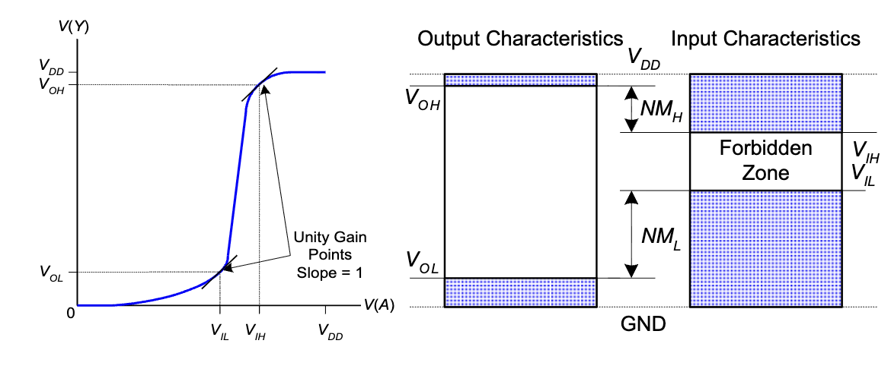
0x0c 用符号表示组合逻辑
和离散数学中类似，数字电路中有另一套符号表示布尔代数。下面是基础的运算：
| 符号 | 含义 | 离散数学表达式 |
|---|---|---|
| \(\overline A\) | 非 | \(\lnot A\) |
| \(A+B+C\) | 或 | \(A \lor B \lor C\) |
| \(ABC\) | 与 | \(A\land B \land C\) |
| \(A \oplus B\) | 异或 | \((\lnot A\land B)\lor(A\land \lnot B)\) |
特别的，使用 \((\cdot)'\) 表示表达式求反。被单引号修饰的表达式，所有的与变成或，每一个元素多一个取反。这很容易搞错，我们一般只用它当作取反的别名，相比起上划线更容易书写。
相比起离散数学中的符号，使用加法和乘法具有书写简单，符合直觉的优点。在后文，我将不区分与或和积和的区别，乘积就是指与的结果，求和就是指求或。重写一些布尔代数计算法则如下，因为已经学过，不做详细介绍：
公理：
- \(B=0\) 若 \(B\neq 1\)
- \(\overline 0 = 1\)
- \(0\cdot 0 = 0\)
- \(1\cdot 1 = 1\)
- \(1\cdot 0 = 0\)
单变量定理：
- 恒等律：\(B\cdot 1 = B, B+0=B\)
- 零元/一元律：\(B\cdot 0 = 0, B+1=1\)
- 幂等律：\(BB = B, B+B=B\)
- 互补律：\(B \cdot \overline B = 0, B+\overline B = 1\)
- 双重否定律：\(\overline{\overline B} = B\)
多变量定理：
- 交换律：\(BC = CB, B+C=C+B\)
- 结合律：\((BC)D = B(CD)\)
- 分配律：\(B(C+D) = BC + BD, B+(CD) = (B+C)(B+D)\)
- 覆盖律：\(B+BC = B, B(B+C) = B\)
- 合并律：\(BC + B \cdot \overline C = B, (B+C)(B+\overline C) = B\)
- 德摩根律：\(\overline{BC} = \overline B + \overline C, \overline{B+C} = \overline B \cdot \overline C\)
0x10 与或式和或与式
首先定义最大项和最小项。最小项是包含全部输入变量的乘积项，最大项则是包含全部输入变量的和。
记忆这个名字的方法是考虑真值表。以最大项 \(A+B+\overline C\) 和最小项 \(A \cdot \overline B \cdot C\) 为例，前者在七种情况下都能被满足，只有 \(A=0,B=0,C=1\) 一种情况下得到 0。后者则只有 \(A = 1, B = 0, C = 1\) 一种情况能满足。可满足情况数最大的项叫最大项，可满足情况数最小的项叫最小项。当然，我们不考虑恒 1 和恒 0 的平凡情况。
与或式就是在计算顺序上先与后或的式子，是多个最小项的和。在离散数学中，这被称为析取范式。由于每个最小项恰好指定了一种可满足情况，所以可以方便的从真值表构造与或式：对于每组真值为 1 的输入，写出其对应的最小项，最后将所有的最小项加起来。
或与式则是在计算顺序上先或后与的式子，是多个最大项的积。在离散数学中，这被称为合取范式。由于每个最大项恰好指定了一种不可满足情况，所以可以方便的从真值表构造或与式：对于每组真值为 0 的输入，写出其对应的最大项，最后将所有的最大项乘起来。
这样，我们就掌握了将任何有限布尔逻辑转化为表达式的方法：首先，我们列出真值表；然后，写出其与或式或者或与式。
例题：Ben正在野炊，如果下雨或者那儿有蚂蚁，Ben将不能享受野炊。
用 \(A\) 表示有蚂蚁（Ant），\(R\) 表示下雨（Rain），设 \(E\) 表示能享受野炊，则列出真值表如下：
| \(A\) | \(R\) | \(E\) |
|---|---|---|
| 0 | 0 | 1 |
| 0 | 1 | 0 |
| 1 | 0 | 0 |
| 1 | 1 | 0 |
与或式： 观察真值表，只有当 \(A=0, R=0\) 时 \(E=1\)。对应的最小项为 \(\overline A \cdot \overline R\)。 因此，\(E = \overline A \cdot \overline R\)。
或与式： 观察真值表，当 \(A, R\) 取其它值时 \(E=0\)。
- \(A=0, R=1\)，对应最大项 \(A + \overline R\)
- \(A=1, R=0\)，对应最大项 \(\overline A + R\)
- \(A=1, R=1\)，对应最大项 \(\overline A + \overline R\) 因此，\(E = (A + \overline R)(\overline A + R)(\overline A + \overline R)\)。
通过布尔代数化简，可以证明两者是等价的。当然，在这个例子中，直接翻译“不下雨且没有蚂蚁”得到 \(E = \overline R \cdot \overline A\) 是最直观的。
0x14 表达式化简
将一个表达式化简为乘积项的个数最少，其中每个乘积项的元素数量最少。在 PPT 上，乘积项被称为隐式/蕴涵式。
表达式化简，基本上就是运用 0x0c 中列出的布尔代数公理。公理运用是平凡的，但不容易观察到的是“添项展开”：
若是化简成 \(AC + A'BC\) 就犯了错。
总的来说，纯推导化简表达式很容易出错，我们一般采用 0x18 中介绍的卡诺图方法进行化简。
0x18 卡诺图
卡诺图首先是一种多维的真值表表示方法。将一些变量的组合作为行标号，剩下的变量组合作为列标号，在表格中填入真值，就得到了一张二维的真值表：
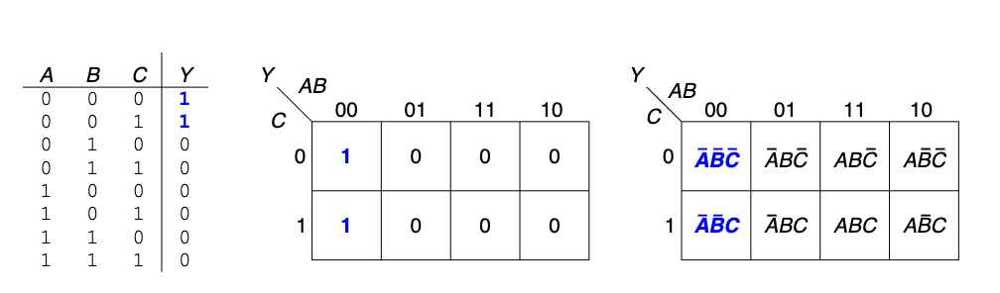
在这个图中，行标号的顺序值得注意：它并不是按照字典序（00,01,10,11）排序的，而是按照格雷码的顺序构造的。
格雷码是一种特殊的编码，无论是几位的格雷码，都具有这样的性质：相邻两个数至多相差一个二进制位，注意相邻的定义是循环的。对于二位格雷码，它是 00,01,11,10。格雷码具有通项公式：\(i \oplus (i \gg 1)\)，记不住也没关系，我们大概率只会用到二位格雷码。但还是给出三位格雷码如下：000,001,011,010,110,111,101,100。
使用格雷码的好处是：在元素数不超过 4 的卡诺图中，任何一个长宽为 1，2，4 的长方形都恰好对应一个蕴涵项，或者说乘积项。长方形面积越大，乘积项元素数越小。
比如上图中，由 \((0,01)\) 和 \((1,11)\) 两点确定的长方形，其对应的蕴涵项为 \(B\)。要确定蕴涵项也很简单，找到哪些元素在正方形中始终只有一种取值即可。这里要注意，由于格雷码的循环性，卡诺图也是循环的，也就是说，包含 \((0,00),(0,10)\) 的长方形也是合法的。
那么，回顾化简表达式的目标：用最少的蕴涵项覆盖所有真值，蕴涵项本身元素数最小。这对应到卡诺图上，就是：用最少的边长为 1，2，4 的长方形覆盖所有 1 的方格，且长方形本身面积越大越好。
下图给出了一个四输入卡诺图的例子。
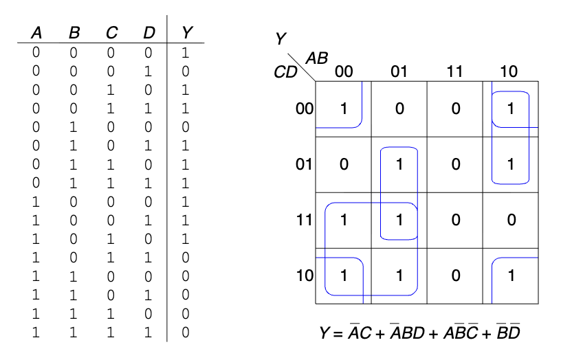
*更多输入的卡诺图：
如果要绘制更多输入的卡诺图，就会遇到问题。简单来说，蕴涵项在三位格雷码中并不总是连续的。比如，考虑 \(ABC\) 组成的格雷码，蕴涵项 \(C\) 对应的格雷码是两段：000,[001,011],010,110,[111,101],100。想要在卡诺图上正确的画出这样的“长方形”，无疑对人脑提出了很大考验。
另一方面，也并不是所有边长为 4 的长方形就对应一个蕴涵项。比如 000,[001,011,010,110],111,101,100 就无法被归为某个蕴涵项。
所以，卡诺图在这里只能提供一个既不充分也不必要条件，你可以选取任意边长为 1,2,8 以及与 2 对齐的 4 的长方形，覆盖所有的 1，这样得到的表达式比较简化，但并不是最简化的，还需要手动检查。
不过，这里还有另一种方法：升维。以 6 输入卡诺图为例，我们把多出来的两个输入按照 2 位格雷码放到第三个维度上，形成一个 \(4\times 4 \times 4\) 的卡诺立方体，在这个立方体中，任意取一个边长为 1，2，4 的长方体，都恰好对应一个蕴涵项。如果你有更多的输入，并且恰好精通高维空间想象，你可以在 \(n\) 维空间里解决 \(2n\) 个输入的化简。
需要说明，三维方法不只是来搞笑的，对于 5 输入和 6 输入的情况，可以将第三维平铺到二维里，分别绘制两个和四个四输入卡诺图，具有一定实操性。
0x1c 绘制组合逻辑电路
我们遵循如下规则绘制电路：
- 输入在图的左边或者顶部
- 输出在图的右边或者底部
- 门必须从左到右
- 最好直线无拐角
- 线总是在 T 型接头处连接
- 交叉线有点则连接，无点则不连接
下面给出一个例子：
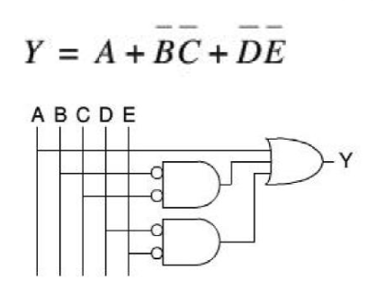
0x20 竞争值与浮空值
竞争值 X 表示电路同时被 1 或 0 驱动。这意味着两个门输出端或电路输入端被直接连接，这种布线本身就是危险的。
浮空值 Z 表示电路没有被任何源驱动，一般出现于三态缓冲器：
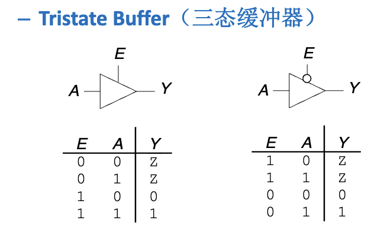
这种电路现在不怎么用了，但是它可以完成这样的功能：如果 Y 处还有其它的输出，那么可以通过 E 将 Y 设为高阻态，此时相当于 Y 处是断路，就不会在 Y 处出现竞争值，保证了数据安全。
0x24 常见的组合逻辑模块
此处我们采取这样的方式介绍：列出所有模块的名字和功能，将 PPT 上给出的电路实现留作例题，可以打开 PPT 自行核对；PPT 上要求“自行实现”的基础内容将在下面给出。
半加器
半加器用于计算两个一位二进制数的和。
- 输入：\(A, B\)
- 输出：\(S\) (Sum), \(C_{out}\) (进位)
- 逻辑表达式：
- \(S = A \oplus B\)
- \(C_{out} = AB\)
全加器
全加器用于计算两个一位二进制数与来自低位的进位的和。
- 输入：\(A, B, C_{in}\)
- 输出：\(S, C_{out}\)
- 逻辑表达式：
- \(S = A \oplus B \oplus C_{in}\)
- \(C_{out} = AB + BC_{in} + AC_{in} = AB + C_{in}(A \oplus B)\)
留作例题。
多路选择器
多路选择器根据选择信号从多个输入数据中选出一个输出。
- 输入：\(2^n\) 个数据输入 \(D_0, \dots, D_{2^n-1}\)，\(n\) 个选择信号 \(S_0, \dots, S_{n-1}\)。
- 输出：\(Y\)
- 功能：\(Y = D_k\)，其中 \(k\) 是选择信号 \(S\) 代表的数值。
- 逻辑表达式（2选1）：\(Y = S D_1 + \overline S D_0\)
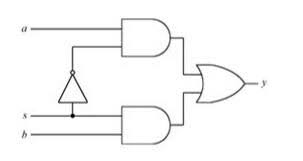
用双路选择器搭建多路选择器留作例题。
用多路选择器可以实现逻辑。以 3 输入为例，可以使用一个八路选择器，将三个输入作为控制位，按照真值表将 8 个输入分别连接 VDD 或 GND，则此时选择器就是真值表。
常见的题型为“只允许使用 4 路选择器和 1 个额外门”，此时就要改造真值表，比如以 AB 为输入，然后在输出中用含有 ABC 的组合逻辑表示真值。如果选择的变量和化简都得当，则可以使用少数门电路完成。需要注意，这种题一般就是与门、或门、非门，采用异或门可能会被判错。（我的作业就被判错了）
译码器
译码器将 \(n\) 位输入代码翻译成 \(2^n\) 个输出信号，其中只有一个有效。
- 输入：\(n\) 位地址/数据
- 输出：\(2^n\) 条线
- 功能：当输入为 \(k\) 时，第 \(k\) 条输出线有效，其余无效。
- 应用：地址译码、指令译码等。
电路留作例题。
译码器也可以用来实现真值表。由于每个输出恰好是一个最小项，只需要用一个多路或门，把真值为 1 的输出连在一起，就完全模拟了真值表。
0x28 组合逻辑的时序
这是重点之一。要牢牢记住这里的缩写，否则到后面的时序逻辑和处理器分析要吃大亏。本身的概念倒是没什么难度，计算也很简单。
- \(t_{pd}\)：传播延迟（Propagation Delay）。描述的是从输入改变到输出保证正确所需的时间。
- \(t_{cd}\)：最小延迟（Contamination Delay）。描述的是从输入改变到输出改变所需的时间。不保证输出正确。Contamination，名词，使某物变脏或变毒的过程，或含有不需要的或危险物质的状态。
要计算电路整体的 \(t_{pd}\) 和 \(t_{cd}\)，需要找到电路的关键路径和最小路径。
- 关键路径：经过的所有元件的 \(t_{pd}\) 之和最大的路径。关键路径的 \(t_{pd}\) 之和就是电路整体的 \(t_{pd}\)。
- 最小路径：经过的所有元件的 \(t_{cd}\) 之和最小的路径。最小路径的 \(t_{cd}\) 之和就是电路整体的 \(t_{cd}\)。
如果读者离散数学学的不错，就能发现，将电路看做有向无环图，\(t_{pd}\) 和 \(t_{cd}\) 与任务图的最晚完成时间和最早开始时间有异曲同工之妙。
0x2c 锁存器
所谓锁存器，是指能够保持状态的电子元件。一个最基本的锁存器是双稳态电路，由两个首尾连接的非门组成。
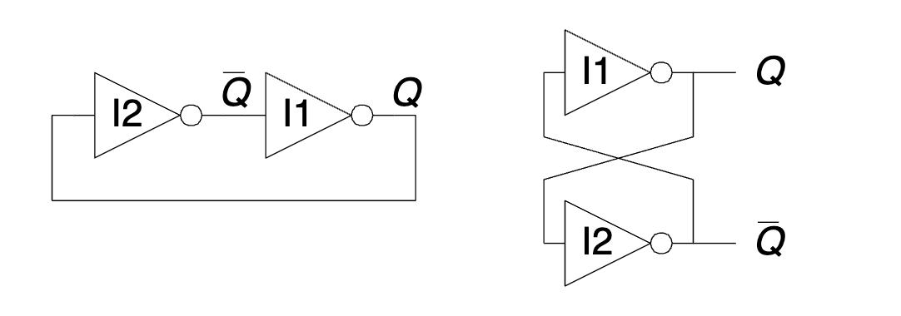
双稳态电路存储了一个二进制值 Q。这个 Q 不会是竞争态或浮空态，一定是稳态的 0 或 1。问题也很显然，我们没办法控制究竟是 0 还是 1。不要想着往 Q 端口输入信号，因为要知道非门其实是有电源的，这样只会造成竞争态 X，并不能大力出奇迹。你的输入是 VDD，非门的驱动也是 VDD，凭什么你能超过非门呢？
显然，锁存的基本结构应该是两个非门。但是，为了能够控制 Q，我们需要有一个输入信号，能够覆盖原有的 Q 值。什么东西能实现 overwrite 呢？不难想到，可以用或门。或门的一个输入是外部输入，另一个输入是锁存输入，当外部输入为 1 时，无论锁存输入是什么，输出结果都是 1。总的来说，我们需要两个或非门。这就是 SR 锁存器，具有 Set，Reset 两个输入端。
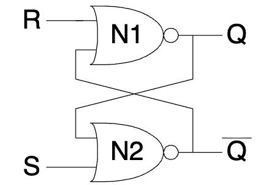
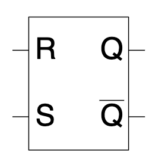
聪明的读者容易想到，与门也可以 overwrite。不妨自行尝试使用与门和非门构造 SR 锁存器。
SR 锁存器的一大问题是竞争问题。当 S 和 R 都是 1 时，内部会产生竞争态。为了解决这个问题，添加几个门就能得到 D 锁存器：
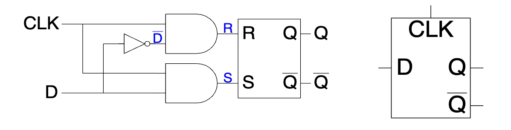
观察上面的电路图，可以得到这样的结论：
- 只有 CLK 的高电平时可以写入
- R 和 S 永远不会竞争
- 写入 Q 的值就是 D 的值
这是很聪明的设计。在 D 锁存器中，两个输入的地位是不对等的，有了清晰的功能分化。
0x30 触发器
锁存器还有最后一个问题：在整个 CLK 高电平期间，D 的值必须保持不变，否则最终写入是 D 最后时刻的值。
理想的情况是对电路稍加修改，让 D 在 CLK 的上升沿（从 0 变成 1 的瞬间）被写入。这就是 D 触发器。
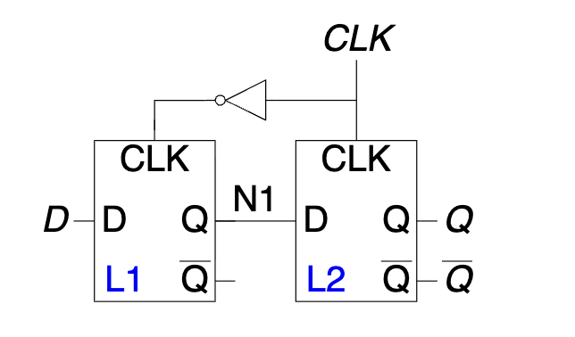
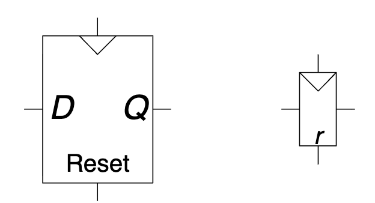
这里，我们命名左边的锁存器为主锁存器，右边的锁存器为从锁存器。
CLK 为 0 时，主锁存器的 D 被写入到 N1。CLK 为 1 时，N1 被写入到 Q。因此，在时钟的上升沿，D 被传输到 Q，随后 Q 一直不变。
那为什么在下降沿什么也不会发生呢？这里，就需要用到非门的时序特性：随着 CLK 的下降沿到来，因为非门有一个延迟 \(t_{\mathrm{NOT}}\)，所以是右边的锁存器先锁住，主锁存器的 D 再被复制到 N1，此时 N1 已经不会影响 Q 了。
触发器还可以有一些额外功能，包括使能（ENable），复位（Reset）。其中使能为 0 时触发器忽略时钟，变成锁存器。复位则有两种：
- 同步复位：在时钟的上升沿，判断复位的值是否为 1，若为 1 则输出 0。
- 异步复位：任意时刻，如果复位的值为 1，则输出 0。
对应的 SystemVerilog 代码如下：
// 同步复位
always_ff @(posedge clk) begin
if (rst) begin
// Set to 0
end else begin
// other
end
end
// 异步复位
always_ff @(posedge clk, posedge rst) begin
/*
如果你无法一下子理解为什么只多一个 posedge rst，
请思考异步相比同步多了什么，
是不是只提前了 rst 上升沿到下一个 clk 上升沿的时间把输出设为 0，
所以只需要多一个 rst 上升沿处理就可以了
*/
if (rst) begin
// Set to 0
end else begin
// other
end
end
0x34 同步电路与异步电路
类比同步复位和异步复位，可以定义同步电路：
- 每一个电路元件是寄存器或组合电路
- 至少有一个电路元件是寄存器
- 所有寄存器都接收同一个时钟信号
- 每个环路至少包含一个寄存器
不满足这样的条件则是异步电路。
0x38 同步电路的时序
相比组合逻辑，同步电路只多了一个触发器，因此，只要考察触发器的时序要求，就可以得到同步电路的时序。
触发器的时序特性：在信号上升沿，从锁存器开始把 N1 复制到 Q。此时的 N1 是上升沿之前的 D，因此要求 D 在上升沿之前就保持稳定，这段时间被称为建立时间 \(t_{setup}\)；要让 Q 完全稳定，需要等到主锁存器的 CLK 变为 0，这中间有一个 \(t_{\mathrm{NOT}}\) 的延迟，锁存器本身也有一些延迟，因此在上升沿之后一段时间 D 也需要保持稳定，这段时间被称为保持时间 \(t_{hold}\)。
触发器由于锁存器内部的延迟，也有类似于 \(t_{pd}\) 和 \(t_{cd}\) 的输出时序。用 \(t_{pcq}\) 表示时钟到来后，Q 可用的最早时间（Propagation Clock to Q）；\(t_{ccq}\) 表示时钟到来之后，\(Q\) 发生变化的最早时间（Contamination Clock to Q）。
同步电路时序的模型如下：考虑相邻的两个触发器。时钟周期为 \(T_c\)，触发器之间的组合电路有时序 \(t_{cd}\) 和 \(t_{pd}\)。不妨认为第一个上升沿在 \(t=0\) 时到来。
考虑第一个触发器+组合电路的部分，这一部分在第一个上升沿 \(t=0\) 之后，需要 \(t_{pcq} + t_{pd}\) 的时间使输出稳定。而在第二个上升沿 \(t=T_c\) 之后，最短 \(t_{ccq} + t_{cd}\) 的时间使输出变化，因此，这一部分能让输出数据在 \([t_{pcq} + t_{pd}, T_c + t_{ccq} + t_{cd}]\) 内保持稳定。
再考虑第二个触发器。在第二个时钟上升沿 \(t=T_c\)，它要求数据在 \([T_c - t_{setup}, T_c + t_{hold}]\) 内保持稳定。
显然，第一个区间应该完全包含第二个区间，所以：
第一条约束被称作建立时间约束，而第二条约束被称作保持时间约束。
0x3c 时钟偏移
在这里，我们研究的时钟偏移 \(t_{skew}\) 的含义是触发器之间的时钟偏移。并且，可以认为这里隐含了一个条件，即相对时间是完全准时的，任何时钟的两个上升沿正好差距是 \(T_c\)。
所以，我们仍然可以认为 CLK1 在 0 和 \(T_c\) 处接受上升沿，而我们关心的 CLK2 的第二个上升沿 \(T_{c2} \in [T_c - t_{skew}, T_c + t_{skew}]\) 中的任何时刻到来。所以，在最坏情况下，第二个触发器希望数据在 \([T_c - t_{skew} - t_{setup}, T_c + t_{hold} + t_{skew}]\) 中都保持稳定。由此可以建立新的约束条件：
0x40 异步电路与亚稳态
无论是触发器还是组合电路，只有在最小延迟之前和传播延迟之后，其输出才是稳定的。从触发输入到输出稳定的时间被称为分辨时间 \(t_{res}\)。对于同步电路，只要遵守孔径时间，触发器的分辨时间 \(t_{res} = t_{pcq}\)。
但异步电路是无法避免的。无论是两个同步电路之间的通信，还是用户的输入，都有可能在孔径时间内改变输入。
如果输入在孔径时间内改变，那么输出就可能进入亚稳态。最终也会自发的跌落到稳态，但这个过程是一个随机过程，到达时间 \(t_{res}\) 满足如下概率分布函数：
\(\frac{T_0}{T_c}\) 描述的是这样一个概率：“在孔径时间内的输入引发亚稳态的概率”，而后面的指数项刻画了亚稳态衰减的概率。
根据这个式子，我们可以估计异步失败频率：
其中，\(t_{more}\) 是设计上允许输出等待的最长时间，也就是 \(T_c - t_{pd} - t_{setup}\)。\(f_{data}\) 是来自异步电路的输入改变的频率，例如人手点击可能在 10Hz 量级。
为了尽可能延长 \(t_{more}\)，我们可以在所有异步信号输入后先接入同步器。同步器由两个背靠背直接连接的触发器组成，中间没有任何组合电路，因此 \(t_{pd} = 0\)，有 \(T_c - t_{setup}\) 的时间等待输入变为正常，最大限度的降低 \(f_{fail}\)。
0x44 有限状态机
有限状态机的核心是状态，也就是所有被触发器保存的变量值。在有限状态机中，触发器被称为状态寄存器。在时钟的两个上升沿之间，根据普通的组合逻辑，从当前状态 S 和输入 I 计算出下一个状态 S' 和输出 O。每个时钟上升沿，寄存器进行状态转移，执行 \(S \leftarrow S'\)。
有限状态机分为两类：
- Moore FSM：输出仅取决于当前状态。\(O = f(S)\)。
- Mealy FSM：输出取决于当前状态和输入值。\(O = f(S, I)\)。
设计状态机主要包括如下步骤：
- 确定输入和输出，确定状态机类型
- 画出状态图，确定状态个数和转换关系
- 写出状态转换表
- 选择状态编码
- 写出真值表
- 确定 \(S', O\) 与 \(S,I\) 的布尔表达式关系
- 画出电路图
如果是大题，希望大家按照上面的方式完成。但如果过程不重要，那么往往可以跳过 3. 5. 步，节省很多时间和草稿纸。
0x48 状态转换
状态转换图是描述状态机的状态随着输入变化关系的有向图，包含了状态、输入和输出信息。
对于 Moore FSM，状态就是输出，所以图的节点包含了状态和输出，边包含了输入，一条 \(((S,O),(S',O'),I)\) 的边表示在 \(S\) 状态下输出是 \(O\)，输入 \(I\) 将让状态机转移至 \(S'\)，输出是 \(O'\)。
对于 Mealy 状态机，输出和输入有关，因此图的边包含了输入和输出。一条 \((S,S',(I,O))\) 的边表示在 \(S\) 状态下，输入 \(I\) 将产生输出 \(O\)，并让状态机转移至 \(S'\)。
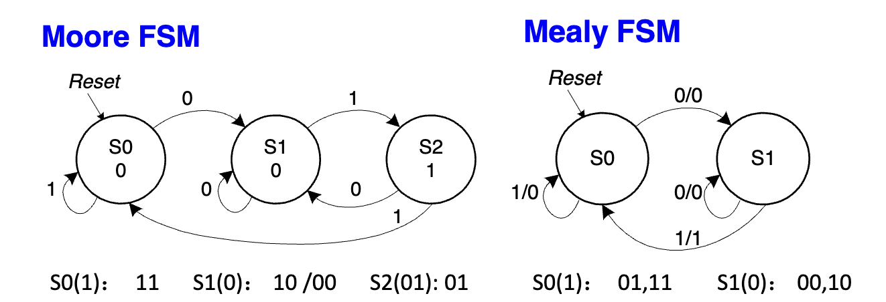
有了状态转换图，就可以列出状态转换表。这没有什么技术含量，其实就是把所有的边信息 \((S,S',I,O)\) 用表格的形式写下来。
0x4c 状态编码
回顾一下，有限状态机的状态是所有触发器保存的变量值。在 0x48 中的状态是以节点的形式存在的，要将其转化为有限状态机的状态，就需要给每个节点赋一个变量值。也就是将状态编码。常用的编码有两种：
- 二进制编码：把节点从 0 开始标号，对应的二进制值就是节点在寄存器中的状态。若有 \(n\) 个状态，需要 \(\lceil \log_2 n\rceil\) 位的寄存器。
- 独热（One-hot）编码：用 \(n\) 位的寄存器表示 \(n\) 个状态，每个状态恰有一位为 1。
独热编码容易阅读，容易编写，但是使用的寄存器位数更多。
将 0x48 中的状态转换表的所有状态都改写成寄存器值，就得到了 \(O,S'\) 关于 \(I,S\) 的真值表。接下来，使用 0x10-0x18 介绍的真值表转表达式技术和表达式化简技术，即可得到 \(O,S'\) 关于 \(I,S\) 的布尔表达式关系。
这一段过程推荐阅读 PPT 中的 FSM3 三页，非常清晰。
0x50 绘制 FSM
绘制 FSM 的电路图有约定俗成的格式：输入在左边或上边，输出在右边。所有的状态都接在一个多位寄存器上，右边是 S'，左边是 S，通过下方走线把 S 走到最右端。如下图所示：
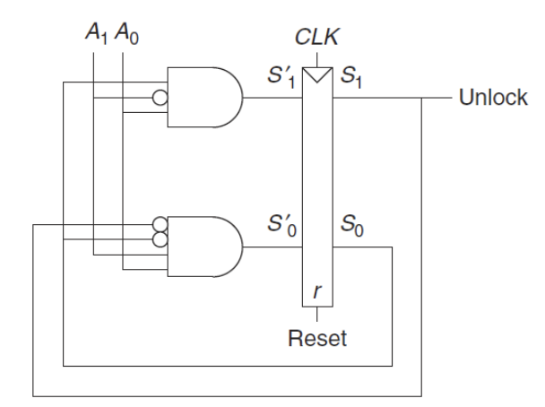
0x54 并行
并行分为两种：时间并行与空间并行。
- 空间并行：申请整数倍的资源，将任务数量进行带余除法，分配给不同的资源来做。
- 时间并行：任务的不同阶段不一定调用所有资源，如果第二段的空闲资源可以完成第一段，那么就可以在第一份任务的第二段同时完成第二份任务的第一段，又称流水线。
衡量并行效率的数值是延迟和吞吐量。延迟的含义是：从开始到第一个任务完成所需要的时间。而吞吐量的含义是：从第一个任务完成后，单位时间能完成的任务数量。
对于流水线来说，由于启动后多任务并行，吞吐量往往大于延迟的倒数。在具体的时序逻辑中，计算延迟和吞吐量的思路如下：
- 计算各级延迟：每一级的延迟是 \(t_{pcq} + t_{setup} + t_{pd}\)。
- 确定时钟周期：\(T_c\) 是所有阶段延迟的最大值。
- 确定延迟：第一个任务需要 \(nT_c\) 才能完成，\(n\) 是阶段数量。
- 确定吞吐量：吞吐量是时钟周期的倒数，又称频率。
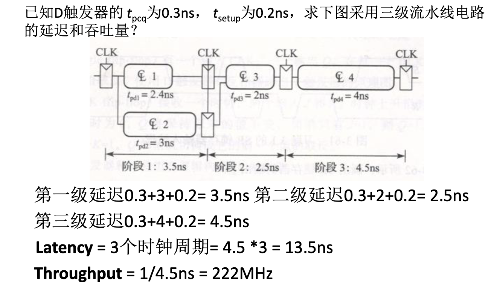
空间并行不能加快延迟，但可以翻倍吞吐量。不过，由于带余除法的余数以及结果的通信问题，最终效果往往达不到任务数除以吞吐量的理想情况。
0x58 存储器和存储阵列
存储分为两类：
- RAM（随机存取存储器）：易失性存储器，断电后数据丢失。支持快速读写。
- SRAM（静态 RAM）：使用锁存器结构存储位，速度快但集成度低、成本高，常用于缓存（Cache）。
- DRAM（动态 RAM）：使用电容存储位，需要定期刷新以维持电荷，速度较慢但集成度高、成本低，常用于主存。
- ROM（只读存储器）：非易失性存储器，断电后数据不丢失。
- 现代 ROM（如 Flash）实际上支持擦写，但速度远慢于 RAM。
- 常见类型包括 PROM（可编程 ROM）、EPROM（可擦除可编程 ROM）、EEPROM（电可擦除可编程 ROM）等。
通过 RAM 和 ROM，我们可以存储单个 bit。但现代计算机一次能处理 32 个或 64 个 bits，把存储器用固定模式组合在一起，能够一次性访问多个 bits，就是存储阵列。
对于 RAM，我们使用字线和位线结构：
- 字线（Wordline）：由地址译码器驱动，负责选中存储阵列中的某一行。
- 位线（Bitline）：连接同一列的所有存储单元，负责传输该列的数据（读或写）。
- 存储单元（Cell）：位于字线和位线的交叉点，是存储 1 bit 数据的基本单元。
一个具有 \(2^n\) 个字、每个字 \(m\) 位的存储阵列，需要 \(n\) 位地址输入。地址经过译码器产生 \(2^n\) 条字线，每次只有一条字线被激活。被激活行的数据通过 \(m\) 条位线输出。
为了提高集成度，大容量存储器通常采用二维译码结构（行译码 + 列译码），将存储阵列排列成接近正方形的形状，通过多路选择器（Mux）从选中的行中挑出目标位。如果再算上位线，实际上就有了三维结构，激活两条字线共同确定一个字目标，再通过位线输出信号。
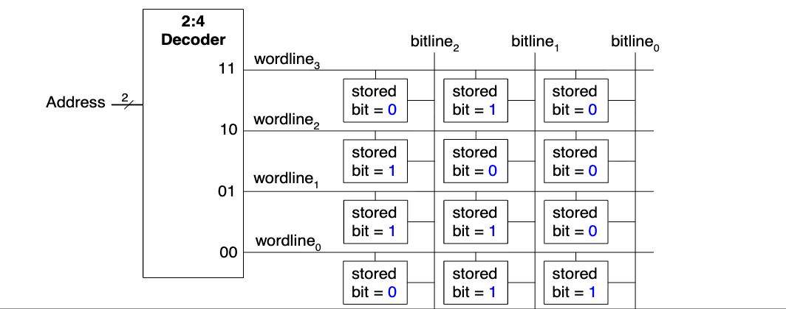
而传统的静态 ROM 实际上就是一张固定表，可以通过电路结构来实现。在 0x24 中，我们已经了解了如何用译码器来模拟真值表，这其实就是一种字长为 1bit 的 ROM。通过引入多组输出线，实际上就有实现了多 bits 的 ROM。信息是通过线之间是否联通硬编码在电路里的，真正的 Read Only。
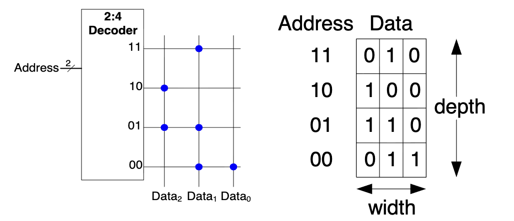
存储器逻辑只是用存储器模拟真值表的平凡应用，不做展开，这样的模块又被称作查找表（LUT），其好处是延迟极低，无需计算，一步到位。
0x5c 高级数字电路模块
本节介绍在第五章提到的各式数字模块。其中一些需要了解功能和核心算法，另一些的实现是平凡的，需要记住功能。对于 ALU 和寄存器文件两个在体系结构中至关重要的模块，将在另一个讲解 SystemVerilog 语言的资料中，分别作为组合逻辑和时序逻辑的例子进行讲解。
加法器
加法器是算术运算的核心。我们在 0x24 中已经见过了一位全加器，因此可以简单得到：
行波进位加法器 (Ripple Carry Adder, RCA)：
- 原理：将 \(N\) 个全加器串联，低位的进位输出 \(C_{out}\) 连接到高位的进位输入 \(C_{in}\)。
- 特点：结构简单，但延迟随位数 \(N\) 线性增长 (\(t_{\text{delay}} \propto N\))，因为高位必须等待低位进位传播。
我们发现，等待进位的时间是加法器的主要瓶颈，因此，对进位的优化催生了很多进位加法器。他们都遵循这样的基本原理：
其中，\(A,B\) 是输入，\(C_i\) 是来自低位的进位。得到 \(C_i\) 后，只需要常数延迟就能得到 \(S_i\)，因此关键就是分析 \(C_i\)。
进位的来源有两种可能：一种是两个输入都是 1，我们称作产生进位，另一种是至少有一个是 1，并且低位有进位，我们称作传递进位。产生进位 \(G_i\) 和传递进位 \(P_i\) 的条件如下：
则可以得到 \(C_i\) 的递推公式：
先行进位加法器 (Carry Lookahead Adder, CLA)：
所谓“先行进位”是这样一个函数 \(\mathrm{CLA}(G,P)\)：给定一个连续段的 \(G[b-1:0],P[b-1:0]\) 信息和低位进位 \(C_{-1}\)，在常数时间内直接得到 \(C[b:0]\)。其原理是用空间换时间，把递推式一口气展开到 \(C_{-1}\) 级，这样，每个进位通过两层门电路就直接得到了。
整个 32 位的先行进位是非常昂贵的。因此要采用分组的方式。具体来说，如果把 \([31:24],[23:16],[15:8],[7:0]\) 四块看成四个整体，它们的行为无非就是接受一个低位输入，产生一个高位输出，因此也有 \(G,P\) 信息。
注意此处，块进位 \(C_{7:0}\) 和单个位进位 \(C_{7}\) 是相等的，但是其 \(G,P\) 的含义不相同，一个是单个位是否产生进位，一个是整块是否产生进位。
通过手动分析的形式，可以知道 \(G_{7:0}\) 和 \(P_{7:0}\) 的表达式，也是一种展开，如下：
这样，我们首先进行 \(\mathrm{CLA}([G_{31:24},G_{23:16},G_{15:8},G_{7:0}], [P_{31:24},P_{23:16},P_{15:8},P_{7:0}])\)，得到 \([C_{31:24},C_{23:16},C_{15:8},C_{7:0}]\)。我们知道，块进位其实就是最高位的单个进位，这样，就把 32 位拆成了 4 组 8 位的 \(G,P\) 对，每一组的低位进位都是已知的，再调用四次 \(\mathrm{CLA}\) 即可。
在第一次实验的附件中，有详细的先行进位加法器教程。
前缀加法器 (Prefix Adder)：
反思先行进位加法器的设计，我们发现“整块的 \(G,P\) 信息”是很有趣的。如果我们能知道 \(G_{b:0}\) 和 \(P_{b:0}\)，就可以立刻得到 \(C_b = G_{b:0} + P_{b:0}C_{-1}\)。
所以，这就转化成了关于 \(G\) 和 \(P\) 的前缀信息查询。此时，就需要左转 OI-wiki 树状数组。如果你不会，那么，下面的图也足够直观，总之可以在 \(\log_2 b\) 个门电路后完成加法。
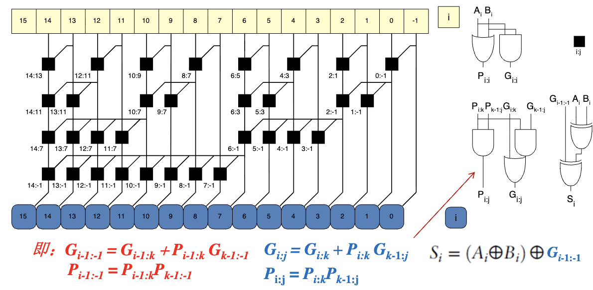
比较器
比较器用于判断两个二进制数 \(A\) 和 \(B\) 的大小关系（\(=, <, >\)）。
- 相等比较器：基于异或非门（XNOR）。若每一位都相等 (\(A_i \oplus B_i = 0\))，则两数相等。
- 大小比较器：从高位向低位逐位比较。若高位 \(A_i > B_i\)，则 \(A > B\)；若 \(A_i < B_i\)，则 \(A < B\)；若相等则继续比较下一位。可以通过减法器实现（检查结果符号位和零标志位）。
移位器
移位器将二进制数向左或向右移动。
- 逻辑移位：空位补 0。
- 算术移位：右移时空位补符号位（保持正负号不变），左移补 0。
- 循环移位：移出的位填补到另一端的空位。
- 桶形移位器 (Barrel Shifter)：利用多路选择器阵列，可以在一个时钟周期内完成任意位数的移位，常用于处理器 ALU 中。
乘法器
乘法比加法复杂得多。
- 部分积法：类似手工乘法，计算 \(N\) 个部分积（Partial Products），然后将它们相加。
- 阵列乘法器：使用加法器阵列并行计算部分积的和。
- Booth 算法：通过对乘数进行编码（如将连续的 1 视为 \(2^k - 2^j\)），减少部分积的数量，从而加速运算。
- Wallace 树：使用压缩器（Compressors）并行压缩部分积，减少加法层级，显著降低延迟。
在第一次实验的附件中，有详细的 Booth 编码 + Wallace 树实现乘法器的教程。
除法器
除法是四则运算中最慢的。
- 试商法 (Restoring/Non-restoring Division)：类似手工长除法。每次减去被除数，若结果为正则商 1，否则商 0 并恢复（或不恢复调整）。需要 \(N\) 次循环。
- 阵列除法器：将试商过程展开为组合逻辑阵列，速度快但面积大。
- 牛顿-拉夫逊迭代法：将除法转化为乘法和求倒数，通过迭代逼近结果，常用于浮点除法。
时钟计数器
计数器是特殊的时序电路，用于记录脉冲个数或分频。
- 同步计数器：所有触发器由同一时钟驱动，状态变化同步，速度快。
- 异步计数器（行波计数器）：前一级触发器的输出作为后一级的时钟，结构简单但延迟累积大。
- 应用：定时器、程序计数器 (PC)、频率分频等。
移位寄存器
移位寄存器具有存储和移位功能。
- 串行输入并行输出 (SIPO)：数据逐位进入，一次性读出。
- 并行输入串行输出 (PISO)：数据一次性写入，逐位读出。
- 应用：串行通信（UART, SPI）、数据延迟、伪随机数生成（LFSR）。